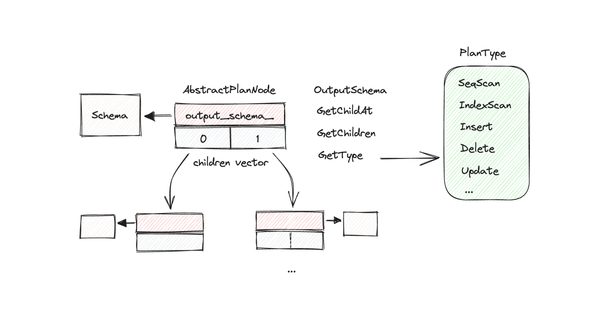
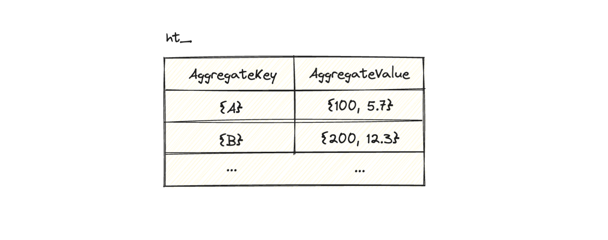
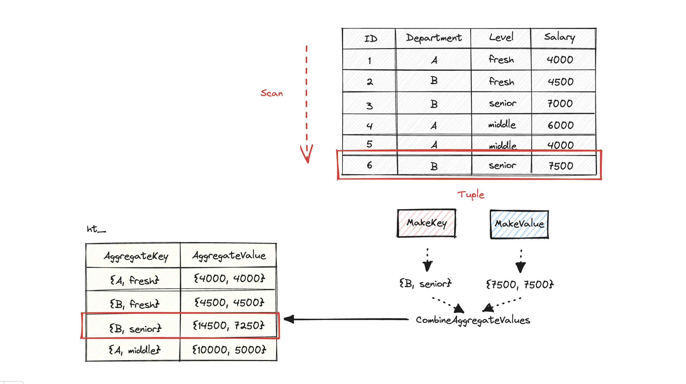

CMU 15-445 Query Execution
在完成bustub的project 3 query execution时，需要阅读大量的源码，并且尝试理清每一个系统组件之间的关系。在这篇博客中，从execution层的视角之下，记录一下bustub的execution engine的执行架构。在execution层之上的parser，binder，planner以及optimizer层，仅在必要时提及，详细对这些层的解析会在之后的博客中记录。
Overview on top of execution layer
官方网站的project 3的handout中，在背景部分详细介绍了每一个project在bustub架构中的位置。在进入execution layer之前，简要理解前面几层的作用也是重要的。在execution layer之上，存在parser，binder，planner以及optimizer四层。这四层总体的作用可以描述为一句话：SQL语言通过解析、语法检查，绑定bustub内部object后，根据SQL语义构建execution plan并优化。优化过后的plan递交给execution engine，执行并返回对应的结果。
Parser & Binder
Bustub的parser利用了duckdb的源码，将一个query输入到parser中，会对其进行解析和保存，生成一个AST（Abstract Syntax Tree）保存下来。Binder将绑定对应的statement。最后将statement提交到planner中。
Planner
Planner负责对statement语句进行规划，将statement链接为一个plan node tree，并在plan node中加入必要的信息。
Optimizer
Optimizer对生成好的plan tree进行评估并优化，返回一个优化后的plan tree。最终提交给Execution engine。
Optimizer只提供了两个公开的接口，Optimize和OptimizeCustom。bustub是一个rule-based优化的数据库，而不是基于cost-based。当系统设置force
starter
rule是true时，就使用默认的Optimize方法，否则使用用户自定义的OptimizeCustom方法（给予学生充分的自由实现自己想实现的优化规则）。
Optimizer目前共提供了物种优化规则，分别是：
OptimizeMergeProjectionOptimizeMergeFilterNLJOptimizeNLJAsIndexJoinOptimizeOrderByAsIndexScanOptimizeSortLimitAsTopN
Tips：在阅读源码时，可以根据bustub_instance.cpp这个文件来看。shell.cpp封装了bustub
instance，并在shell中调用ExecuteSql，对string的sql进行解析，规划，优化以及执行等一系列操作。做project
3的过程中也可以根据bustub instance进行debug，会很快发现问题的原因。
Overview of execution layer
了解了上面四层的基本作用和功能后，我们就可以将他们所有的细节和实现抛之脑后，并专注于optimizer给我们提供了什么。Optimizer返回的是一个plan node。这个plan node和planner返回的是同一个类型，不同的是内在的plan：optimizer返回的plan是经过优化后的。因此我们可以先简要理解一下Abstract Plan Node的设计，如下图。

源码定义在src/include/execution/plans/abstract_plan.h，配合源码阅读更加。
Bustub中利用enum class定义了若干PlanType，有关enum class的引入，对比于enum而言，加强了“类型”这一概念。例如，下面的代码例子中，RED和APPLE本质上都是相同的整数，编译器会编译成功。而限定了enum class之后，就有了类型的概念，不同类型的比较肯定无法成功。
enum Color { RED, GREEN, BLUE }; // traditional enum
enum Fruit { APPLE, ORANGE, BANANA }; // another traditional enum
enum class Vehicle { CAR, TRUCK, BIKE }; // enum class
enum class Animal { CAT, DOG, BIRD }; // another enum class
void fun() {
if (RED == APPLE) { // This compiles, even though it's probably a mistake
// ...
}
if (Vehicle::CAR == Animal::CAT) { // This doesn't compile, because they're different types
// ...
}
int myColor = RED; // This compiles, even though it might be a mistake
int myVehicle = Vehicle::CAR; // This doesn't compile, because it needs a static_cast<int>
}
// Note: Provided by ChatGPT code interpreterAbstractPlanNode拥有两个public成员变量，分别是output_schema_和将多个子节点封装起来的children_。
- output_schema_：定义了该Node输出的Tuple的Schema。
- children_：vector，当前Plan node的子node存储于此。其中每一个元素通过RAII的shared_ptr指向另一个AbstractPlanNode。
每一个Node都链接其子Node，构成了一个树形结构。因此Planner和Optimizer的返回值仅需要一个根节点，即可通过根节点遍历整个树形结构。
Task #1 - Access Method Executors
这一个Task主要实现最基础的增删改查的方法，包括插入、删除、查询和索引查询。这是之后Task的基础，必须确保这一部分没有bug。需要注意的是，实现Task1的全部任务后需要通过p3.00-p3.05的所有测试。
SeqScan
顺序扫描是整个实验最简单的部分。SeqScanPlanNode通过SELECT FROM语句被构建。而SeqScanExecutor的任务是通过迭代的方式扫描整个table，一次Next调用产生输出一个Tuple。现在的问题是：
- 扫描哪个table？
- 怎么获取table？
plan node和exec_ctx_包含了executor执行所需要的所有必要信息。知道这一点适用于之后所有的Task。每当需要一些信息或方法是，可以先观察对应的plan node和exec_ctx_中是否包含自己需要的。SeqScanPlanNode中定义了GetTableOid方法，专门指明当前需要被seqscan的table是哪一个。有了oid还不够，我们需要使用catalog的GetTable获取tableinfo，进一步获取tableinfo所管理的table。之后就是在此之上创建一个迭代器，每次调用Next返回一个Tuple即可。
Insert & Delete
插入和删除操作较为特殊，插入删除成功要就返回对应插入删除的数量，如果不成功需要返回0。因此返回的Tuple是临时构建的，不具有rid这个属性值。由于可以一次性插入和删除多个值，因此需要在insert和delete的Next方法里循环调用子节点的Next。
需要注意的是，由于一个table上可能会构建一个或者多个索引。在执行插入和删除操作的时候，需要对这个table上的所有索引进行更新操作。索引是根据自己实现的b+树构建的，实现这个Task之前需要确保b+树实现没有问题。b+树的插入和删除需要key和rid作为其value，rid我们已经有了，问题是key从哪里获取？Tuple提供了一个KeyFromTuple的方法，用于根据相关table的信息构建key。
还有很多的细节bug，可以通过看test和print大法来debug完善代码。
另外，Insert和Delete的代码基本一致，实现好一个直接复制粘贴，更改对应的函数即可。
IndexScan
做这个task之前需要理解b+树的index工作方式。b+树最终存储的是一个key和value，value是某个tuple的record
id。可以阅读以下RID的源码，rid内部包含了page_id_和slot_num_两个信息。page_id_指的是当前tuple在哪一个page，slot_num_表示在这个page中的具体位置。
首先我们还是面临两个问题：
- 根据table的哪一个index做scan？
- 如何获取这个index？
还是看plan和catalog。在plan中我们可以获取index oid，根据index oid和catalog的GetIndex方法，获取对应的index info。index
info包含了通过CREATE INDEX语句构建好的b+树。b+树的好处就是，在上面建立一个索引后，可以直接通过访问下一个节点的方式遍历整个树的子节点，进而达到scan的目的。
根据迭代器，每到一个位置，可以得到对应的rid。根据rid获取page id，使用buffer
pool manager读取该page，并reinterpret
cast到TablePage，TablePage对象可以调用GetTuple方法根据rid读取对应的Tuple。最后别忘了UnpinPage。
Task #2 - Aggregation & Join Executors
实现了基本的读写方法之后，接下来要做的就是要实现SQL中的GROUP BY，SUM()，MIN()等聚合函数以及JOIN。
Aggregation
在Aggregation的实现中，Bustub采用In Memory Hashing的方法。我们先通过一个例子来理解一下。
假设我们有以下员工表：
| EmployeeId | Department | Salary |
|---|---|---|
| 1 | 销售部 | 1000 |
| 2 | 销售部 | 2000 |
| 3 | 人力资源部 | 1500 |
| 4 | 人力资源部 | 2500 |
| 5 | 市场部 | 1200 |
| 6 | 市场部 | 1800 |
我们想执行以下SQL聚合查询：
SELECT Department, SUM(Salary) as TotalSalary
FROM Employees
GROUP BY Department;以下是使用内存中的哈希聚合来执行此操作的步骤：
- 初始化：创建一个空的哈希表。在此例中，哈希表中的键将是部门名称，值将是每个部门的总薪水。
- 哈希和聚合：处理员工表中的每一行：
- 对于第一行（销售部，1000），"销售部"哈希到哈希表中的一个位置。由于哈希表中还没有"销售部"的现有条目，所以创建一个新条目，其中"销售部"作为键，1000作为初始总薪水。
- 对于第二行（销售部，2000），"销售部"再次哈希到哈希表中的相同位置。由于哈希表中已经有了"销售部"的条目，所以将薪水2000加到现有的总薪水上，结果得到更新的总薪水3000。
- 这个过程对剩余的行重复。当遇到一个已经在哈希表中的部门名称时，将该行的薪水添加到该部门的现有总薪水中。如果部门名称尚未在哈希表中，则创建一个新条目。
- 输出：处理完所有行后，哈希表如下：
| Department | TotalSalary |
|---|---|
| 销售部 | 3000 |
| 人力资源部 | 4000 |
| 市场部 | 3000 |
哈希表中的每个条目代表一个组（在这种情况下是一个部门）及其聚合值（总薪水）。这是聚合操作的结果。
这种方法的优点是只需要对数据进行一次遍历，使用哈希快速找到每一行在哈希表中对应的条目。然而，它需要足够的内存来存储哈希表，因此如果数据集太大，无法适应内存，可能就不适合使用这种方法。
理解了In Memory
Hashing的运作机制，我们就可以看一下bustub提供的SimpleAggregationHashTable是如何实现的了。源码定义在src/include/execution/executors/aggregation_executor.h，配合源码阅读更佳。
SimpleAggregationHashTable的核心成员变量只有一个，用于存储Key-Value的unordered
map。不过这里的Key和Value是AggregateKey和AggregateValue，定义在src/include/execution/plans/aggregation_plan.h中。本质而言，两者都是一种vector容器，对于一个Key或Value而言，vector中的每一个元素都是用来存储一个Tuple中的某一个属性的值的。可以看下图进行理解。

对于上面的哈希表而言，Key只有一个，而Value内部存储了两个。原因在于SQL语句的GROUP BY后面仅对一个column进行聚合，并且使用了SUM和AVG的聚合函数（若对多个column进行group，AggregateKey就会包含多个元素。
函数实现围绕着InsertCombine展开。首先先判断当前哈希表是否已经存在对应的AggregateKey，如果不存在，就执行哈希插入并初始化Value值，并执行CombineAggregateValues，根据传入的AggregateValue和聚合函数对哈希表中的值进行统计。如果存在，则直接指向CombineAggregateValues（这个函数就是需要自己实现的）。
剩余的部分就是将SimpleAggregationHashTable加一个迭代器的功能。
理解了上述数据结构，我们可以结合AggregationExecutor和一个例子进一步想想算法是怎么运作的。这不得不提到private的函数MakeAggregateKey和AggregateValue。这两个函数是帮你生成对应的K-V值的，也就是说，面对一个Tuple的时候，脏活累活不需要你做了，直接调用这两个函数就能得到期望插入哈希表的数据。我们假设有一个这样的table，table的列有ID，Department，Levels和Salary。如果我想执行如下的SQL：
SELECT Department, SUM(Salary), AVG(Salary)
FROM Employees
GROUP BY Department, Levels;
那么AggregateExecutor的子节点会根据条件提供所需的Tuple，每得到一个Tuple，就加入哈希表中统计。
执行聚合函数的核心就是CombineAggregateValues函数。由于aggregate
expression和输入输出的value顺序是绑定的，也就是不同的value对应不同的聚合函数。比如，有SUM(c1)，AVG(c2)，那么对应的value就会存储一个长度为2的vector，vector第一个元素对应SUM，第二个元素对应AVG，以此类推。对aggregate
expression进行for循环，在每个位置上执行对应的计算操作，计算操作可以参考src/include/type/value.h中定义的mathematical
functions直接调用。实现较为简单，需要注意的是要处理第一次计算初始值是0或interger_null的情况，具体可以通过debug的方式完善代码。
第二步就是实现Next函数。正如官网的指导手册所说，aggregation是一个pipeline breaker。意思就是如果aggregation executor想要提供Tuple，必须让子节点提供全部的Tuple。我这里的思路是，在第一次进入Next的时候，循环调用子节点的Next构建哈希表。第二次以及往后都不再执行子节点的Next，而是通过iterator遍历构建好的哈希表，还原出对应的Tuple。Note：需要解决no groups，no output，以及空表的情况。具体可以参考test的信息进行debug，观察程序的行为预期。
Join
在 SQL 中，JOIN
操作基于两个或更多表之间的相关列合并行。它允许你查询来自多个表的数据，就像它们是一个单独的表一样。有几种类型的连接操作，包括
INNER JOIN，LEFT JOIN，RIGHT JOIN
和 FULL JOIN。
INNER JOIN：这是最常见的连接类型。
INNER JOIN返回在两个表中都有匹配值的记录。让我们以两个表为例：
Orders表：OrderID CustomerID OrderDate 1 3 2023-07-01 2 1 2023-07-02 3 2 2023-07-03 4 4 2023-07-04 Customers表：CustomerID CustomerName 1 John 2 Alice 3 Bob 5 Mike
Orders和Customers在CustomerID上的INNER JOIN将如下所示：SELECT Orders.OrderID, Customers.CustomerName, Orders.OrderDate FROM Orders INNER JOIN Customers ON Orders.CustomerID = Customers.CustomerID;结果将是：
OrderID CustomerName OrderDate 1 Bob 2023-07-01 2 John 2023-07-02 3 Alice 2023-07-03 注意，没有订单的 Mike 不会出现在结果中。同样，订单 4 也不会出现在结果中，因为它没有匹配的客户。
LEFT JOIN（或
LEFT OUTER JOIN）：这种类型的连接返回左表（即第一个表）中的所有记录，以及右表（即第二个表）中的匹配记录。如果没有匹配，结果在右侧为NULL。如果我们将前面的查询更改为
LEFT JOIN：SELECT Orders.OrderID, Customers.CustomerName, Orders.OrderDate FROM Orders LEFT JOIN Customers ON Orders.CustomerID = Customers.CustomerID;结果将是：
OrderID CustomerName OrderDate 1 Bob 2023-07-01 2 John 2023-07-02 3 Alice 2023-07-03 4 NULL 2023-07-04 注意，所有订单都出现在结果中。对于没有匹配客户的订单 4，
CustomerName为NULL。
总的来说，使用哪种类型的连接取决于你想要做什么。当你只想获取在两个表中都有匹配的记录时，使用
INNER JOIN。当你想获取左表中的所有记录，无论它们在右表中是否有匹配，都使用
LEFT JOIN。
对于nested loop join和index join而言，难点在于：
- 如何判断outer tuple和inner tuple是否符合条件
- 搞清楚如何构造join之后的Tuple
对于第一个问题，解决方法就是用plan的EvaluateJoin。而第二个问题，需要根据左右两个子executor的output
schema对outer tuple和inner
tuple的值按顺序提取。提取之后构造tuple输入。
需要注意的一点，由于nested loop join要多次遍历inner table。每次遍历完后需要对right executor进行init，可以看看它具体调用了哪个init（有可能init的实现有bug）。
Task #3 - Sort + Limit Executors and Top-N Optimization
Sort & Limit
Sort主要运用了std::sort算法来实现排序，当然，排序的函数需要自己去定义，这里我定义了一个lambda函数。ORDER BY语句之后可能会出现一个table的很多个column。这时后的排序逻辑是，首先按照第一个column进行排序，其次在第一个基础上排序第二个，在第二个基础上排序第三个...
在实现过程中，重点是处理DESC、ASC、DEFAULT和INVALID的情况，并要运用Value类型的数值操作实现比较。
Limit是整个任务中最为简单的一个算子。算法相当简单，仅仅做一个条件判断即可。
Top-N Optimization
默认情况下，当SQL执行如下语句：
EXPLAIN SELECT * FROM __mock_table_1 ORDER BY colA LIMIT 10;内部会做两件事：
- 对mock table整体进行升序排序
- 寻找最开始的10个进行输出
这种方法无疑是不高效的。换种思路，我们可以用Top-N排序的方法以更高的效率满足排序和Limit的需求。Top-N的思路也很简单，重点是维护一个可以记录当前最大值的table。这里采用了c++STL中的priority queue。使用这样的STL，当存储的数据是自定义的类型时，需要自定义比较函数，可以看我写的这篇文章《STL杂谈：priority_queue》。这里面记录了关于使用这个工具的基本方法以及有关定义比较函数的问题。
我们所做的就是需要线性遍历一次底层的算子，对于每一个提供的Tuple，加入优先队列中，优先队列会自动维护顺序。每次插入操作之后进行pop操作，去除最小或最大的元素即可。
这个实验还有一个需要实现的目标就是实现sort limit算子的优化。如果遇到类似的算子排列，需要将两个算子优化为一个topn算子，以减少sort整个table的时间开销。在实现之前建议了解优化器的架构，以及它是如何优化算子的。建议阅读optimizer文件夹中的各种优化实现（注意：bustub采用的是rule-based优化，即满足特定条件或规则就会做优化，不会采用估计开销的优化方式）。对比不同优化方案的写法，找出共性。实现起来相对简单，需要搞清楚sort plan和limit plan的父子关系。
Summary
至此，就完成了全部的基本实验。更有趣和挑战的部分应该在Leaderboard Task。对于进一步的优化，今后会抽时间完善并做一些总结。这个实验阅读的代码量还是很大的，基本了解了optimizer，executor的工作原理，理清了executor，predicate以及对应evaluation的关系。整个部分相当于在b+tree和buffer pool manager层之上的应用层，可以看到SQL执行层和这两者之间的调用关系。也连带阅读了tuple、table和bustub内部的type实现。收获还是很大的。